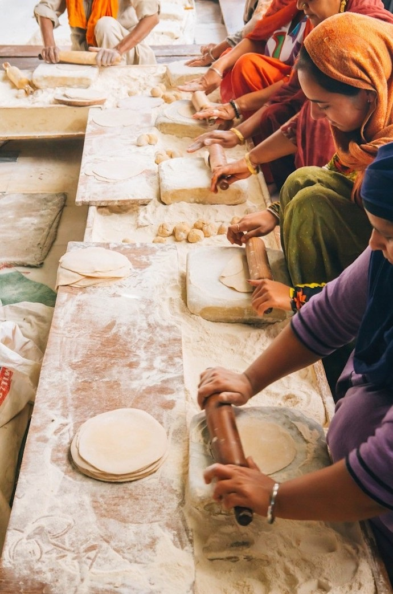
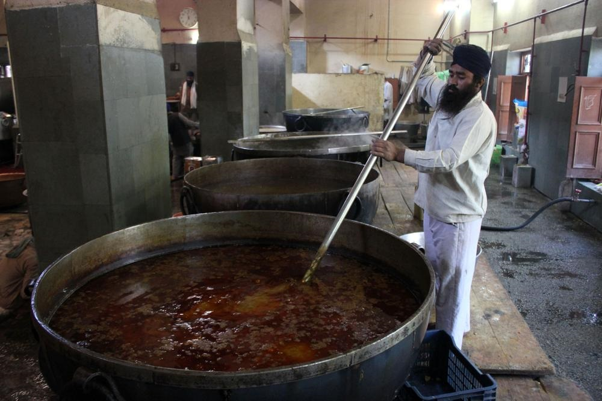
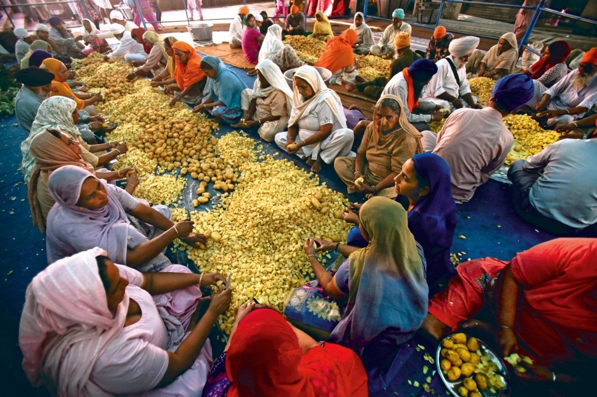
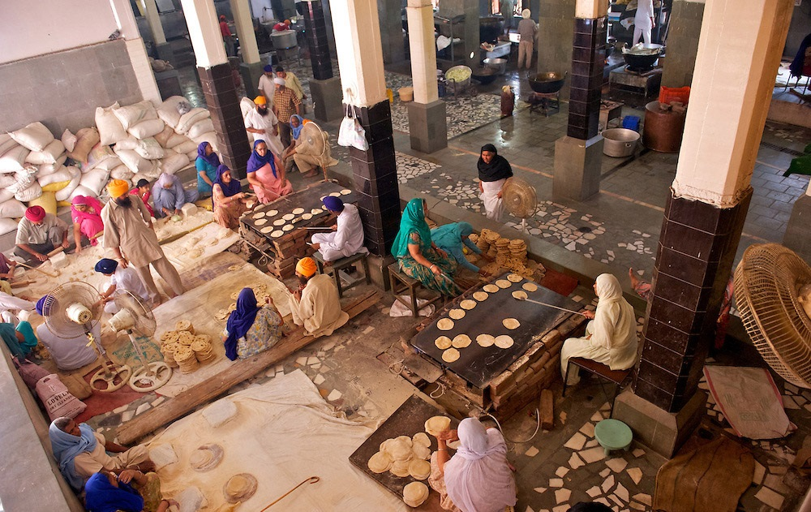
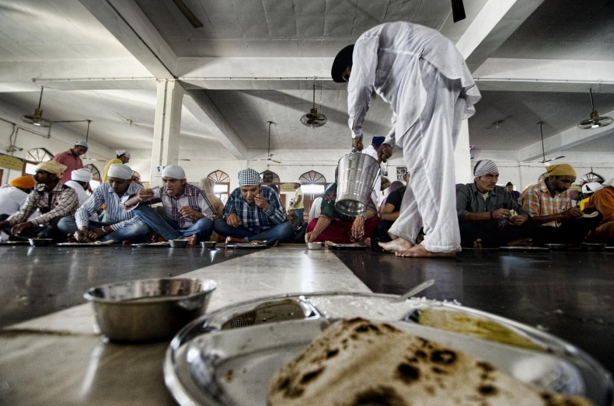
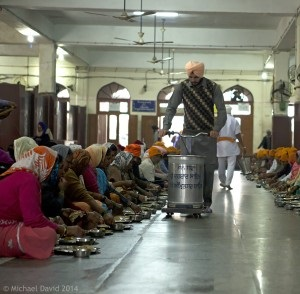
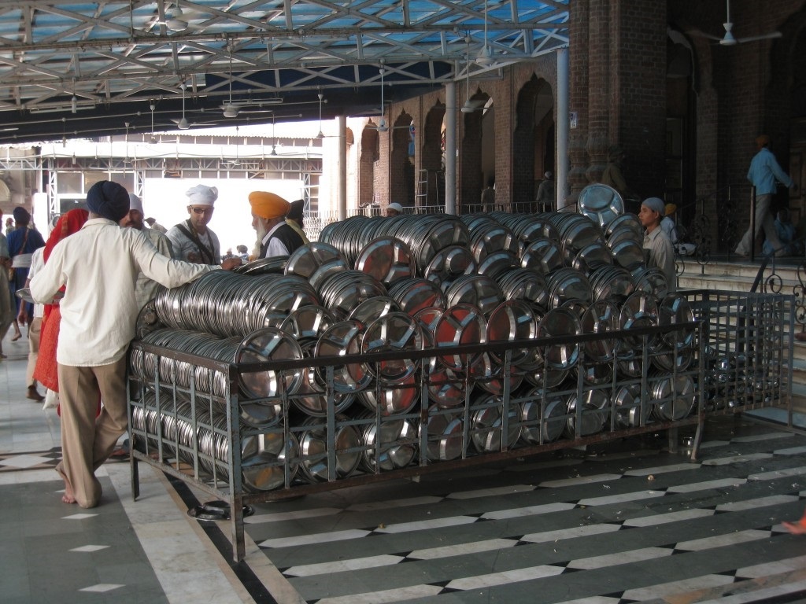
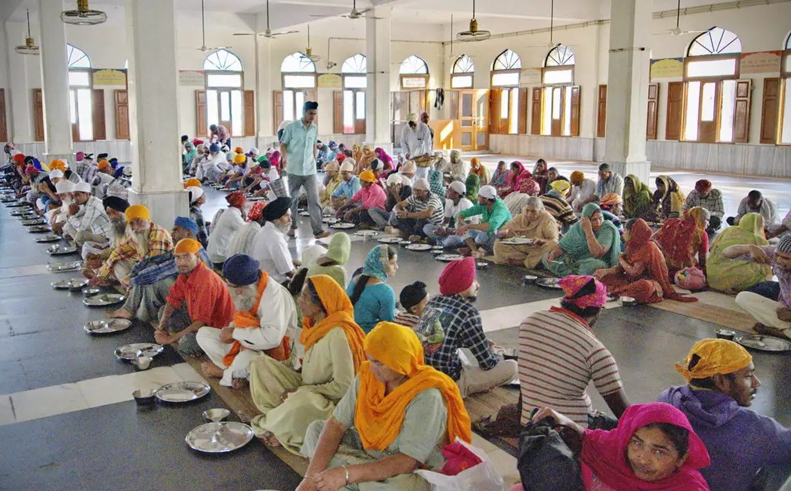

Langar: The Living Tradition of Service and Equality
Key Takeaways
- Universal Equality: Originated by Guru Nanak Dev Ji to challenge 15th-century caste barriers by serving free meals to everyone sitting as equals on the floor.
- Pangat & Sangat: Institutionalised by Guru Amar Das Ji, requiring anyone seeking audience to first eat together in the Langar hall.
- Divine Revelation: Rooted in Gurbani principles that all humanity springs from One Divine Light (Ik Onkar).
- Global Scale: The Golden Temple Langar serves over 40,000 meals daily (rising to 100,000+ on holidays), operating continuously as one of the world's largest free community kitchens.
The tradition of Guru Ka Langar is one of the most remarkable contributions of Sikhism to humanity. Langar refers to the free community kitchen where fresh meals are prepared and served to all people regardless of religion, caste, nationality, gender, or social status.
Wherever Sikhs have settled across the globe, they have established Langars open to all, echoing the timeless prayer: “Loh langar tapde rahin” — May the hot plates of the Langars remain ever in service.
Table of Contents
History & Origin of Guru Ka Langar
The Social Revolution Started by Guru Nanak Dev Ji
The history of Langar dates back to the time of Guru Nanak Dev Ji, the founder of Sikhism. In the strict caste-ordered society of 15th-century India, social customs prevented people from different castes from eating together. To dismantle this deep-seated discrimination, Guru Nanak introduced Langar, requiring everyone to sit side-by-side in rows and share the exact same meal.

Guru Amar Das Ji and the Pangat System
The tradition was further strengthened and institutionalised by Guru Amar Das Ji, the third Sikh Guru. He established a strict rule: anyone wishing to meet him had to first sit in the Langar hall and share a meal with others. This established the cornerstone principle of Pangat and Sangat, where communal dining (Pangat) accompanied spiritual gathering (Sangat).

Divine Inspiration from Gurbani
The spiritual philosophy of Langar is deeply rooted in Gurbani — the sacred scripture of the Sikhs. The Guru Granth Sahib Ji teaches that the Light of God resides in every heart and that all humanity springs from one Divine Light. To feed anyone who arrives at the Langar is to serve God's own creation.
ਏਕ ਨੂਰ ਤੇ ਸਭੁ ਜਗੁ ਉਪਜਿਆ ਕਉਣ ਭਲੇ ਕੋ ਮੰਦੇ ॥੧॥
From the One Light, the entire universe welled up. So who is good, and who is bad?" (Ang 1349)

The Core Values of Langar
Volunteering in the Langar kitchen (preparing food, serving meals, and washing dishes) is considered a sacred act of Seva (selfless service) and spiritual devotion.
| Value | What It Means in Practice |
|---|---|
| Equality | Everyone — regardless of religion, caste, colour, creed, age, gender or social status — sits together on the floor as equals. No one is elevated above another. |
| Sharing | Sikhs contribute their honest earnings (Vand Chhako) to fund the Langar. Food is donated, cooked, and served entirely by the community. |
| Community | Cooking, serving, and dining side-by-side breaks down social barriers and builds strong communal bonds. |
| Inclusiveness | The Langar is open to all faiths and backgrounds without exception. No one is ever turned away. |
| Oneness of Humankind | A living expression of the belief that all people spring from One Creator and share fundamental human dignity. |

Langar at the Golden Temple
At Sri Darbar Sahib (Golden Temple) in Amritsar, the Langar operates on a massive scale as one of the largest free community kitchens on Earth. Meals are strictly vegetarian (lentils, roti, rice, and vegetables) to ensure people of all dietary and religious traditions can eat comfortably together.


Rules and Customs for Dining
The Langar follows simple customs that reinforce humility, respect, and universal equality:

- Remove Shoes: Remove shoes and wash hands/feet before entering the dining area.
- Cover Your Head: Wear a scarf, turban, or fabric head covering as a mark of respect.
- Sit on the Floor: Sit in straight rows (Pangat) on the floor alongside all other diners without elevated seating.
- Equal Serving: Everyone receives the exact same fresh vegetarian meal.
- Purely Vegetarian: Ensures the food is universally acceptable across all religious traditions.
- Completely Free: Offered without charge or expectation of payment.
